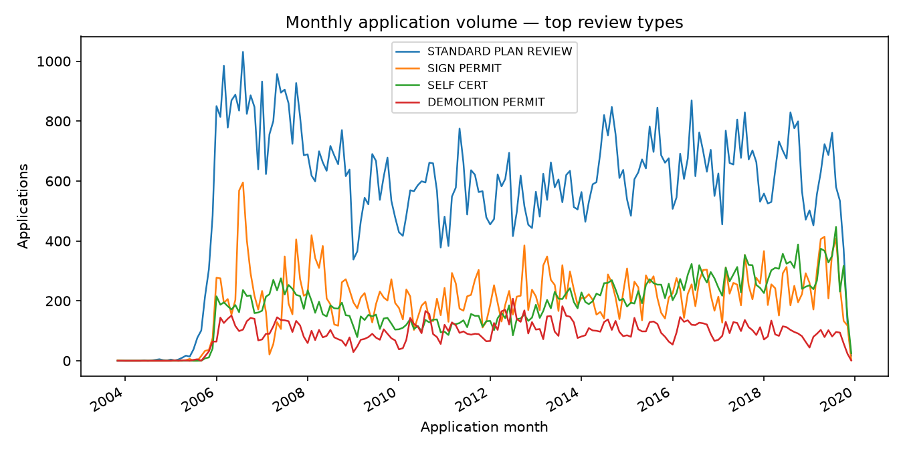
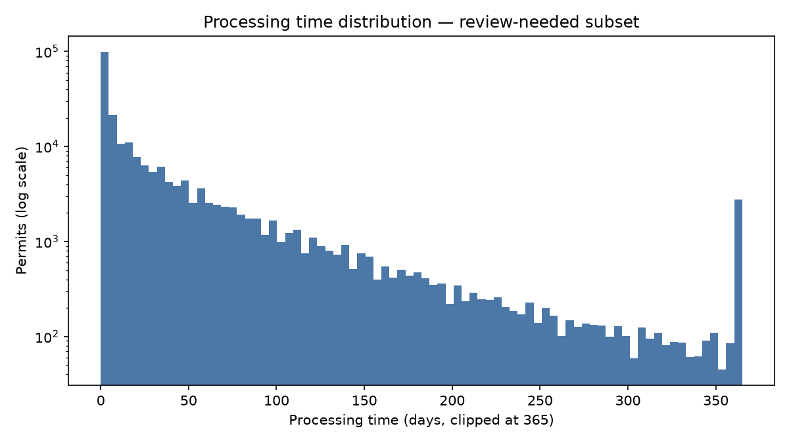
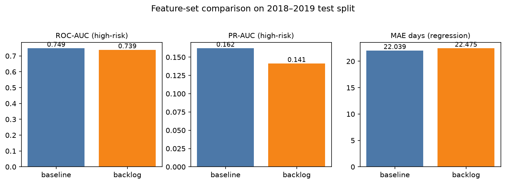
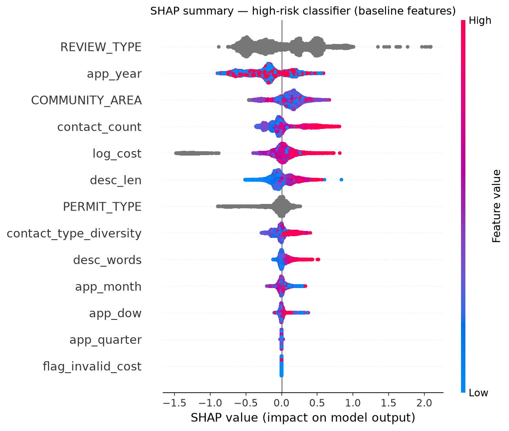

시카고시 건축 인허가 227,603건(2006–2019)으로 착공 전 처리 지연을 예측하는 모델과, 그 출력만으로 움직이는 진단 에이전트를 만들었습니다. 원칙은 하나 — tools over tokens. 모든 숫자는 결정론적 도구의 출력이고, LLM은 그 증거를 서술할 뿐 사실을 추가하지 않습니다.
인허가 처리 기간은 발주자·시공사가 통제할 수 없는 외부 승인 큐에서 결정되고, 지연되면 착공 이후 모든 후속 공정이 밀립니다. 그래서 이 프로젝트는 세 가지 질문에 답하도록 설계했습니다. (1) 이 permit은 며칠 걸릴 것인가, (2) 같은 유형 대비 비정상적으로 오래 걸릴 확률은 얼마인가, (3) 그 판단의 근거는 무엇이고 과거 유사 사례는 어땠는가. 예측 하나가 아니라, 계획 담당자가 실제로 쓸 수 있는 근거 묶음을 목표로 했습니다.
원본은 시카고시 공개 인허가 606K 행입니다. 그중 EASY PERMIT 등 즉시 발급 유형(중앙값 0일, 전체의 약 62%)은 '지연 예측'이라는 문제 자체가 성립하지 않아 명시적으로 제외했고, 심사가 실제로 발생하는 227,603건만 남겼습니다. 대상 변수(처리일수)는 강하게 우측으로 치우친 분포입니다 — 대부분은 며칠 안에 끝나지만, 꼬리의 소수가 일정을 무너뜨립니다.

월별 접수량 추이. 처리 체계(regime)가 시기에 따라 변한다는 신호가 이미 여기에 있습니다.

처리일수 분포 — 긴 꼬리(long tail)가 문제의 본질입니다.
이 프로젝트의 차별점은 모델이 아니라 규율입니다. "접수 시점에 알 수 있었는가"를 기준으로 피처를 허용/금지 목록으로 강제했고, 분할은 무작위가 아닌 시간 기준입니다 — train ≤2016 / valid 2017 / test 2018–2019. 미래 정보가 한 줄이라도 새면 성능표 전체가 무의미해지기 때문입니다.
| 허용 (접수 시점 가용) | 금지 (결과 누수) |
|---|---|
| permit / review 유형 | ISSUE_DATE |
| 신고 공사비 (+결측 플래그) | PROCESSING_TIME |
| community area | 수수료 컬럼 |
| 접수일 파생 (연·월·요일) | 사후 상태 필드 |
| 연락처 수·유형 다양성 | — |
| 작업내역 텍스트 통계 | — |
| 엄격히 과거 행만 집계한 trailing 물량·중앙값 | — |
스크롤해서 이 섹션에 들어오면 단계가 순차 점등됩니다.
모든 단계는 재실행 가능한 스크립트이고, 각 산출물은 중간 검증을 거칩니다. 에이전트는 이 파이프라인의 끝단에서 도구 호출만으로 진단을 조립합니다.
held-out 테스트(2018–2019)에서 회귀 MAE 22.0일, 중앙절대오차 4.7일 — 꼬리가 긴 분포에서 평균과 중앙값의 간극 자체가 문제의 난이도를 보여줍니다. 고위험 분류는 ROC-AUC 0.749, PR-AUC 0.162(기저율 6.6%), 상위 10% 스코어 구간에서 실제 고위험의 28.1%를 포착합니다. 완벽과는 거리가 멀지만, 접수 시점 정보만으로 얻은 정직한 수치입니다.

baseline vs +backlog 피처셋 비교 (테스트 구간).
| 지표 | baseline (채택) | +backlog |
|---|---|---|
| MAE (일) | 22.0 | 22.5 |
| 중앙 AE (일) | 4.7 | 5.0 |
| ROC-AUC | 0.749 | 0.739 |
| PR-AUC | 0.162 | 0.141 |
| top-decile capture | 28.1% | 24.2% |
전 지표에서 +backlog가 baseline보다 소폭 나빴습니다(빨강). 그래서 baseline을 최종 채택했습니다 — 수치는 models/metrics.json에서 그대로 옵니다.
직관적으로는 '접수 당시 큐가 밀려 있으면 늦어진다'가 맞아 보입니다. 그런데 엄격히 과거 행만 집계한 trailing backlog 피처를 추가하자 전 지표가 소폭 악화됐습니다(MAE 22.0→22.5, ROC-AUC 0.749→0.739). 원인은 시간적 드리프트 — ≤2016 데이터로 학습된 backlog 통계는 2018–2019에는 이미 바뀐 처리 체계를 인코딩하고 있었습니다.
MAE 22.5일 · ROC-AUC 0.739 — trailing backlog 피처를 더했지만 전 지표 소폭 하락
MAE 22.0일 · ROC-AUC 0.749 · PR-AUC 0.162 · top-decile capture 28.1% — 접수 시점 정보만으로 학습, 최종 채택

테스트셋 SHAP summary. REVIEW_TYPE이 지배적 동인입니다.
지배적 동인은 REVIEW_TYPE — 어떤 심사 경로에 들어가느냐가 지연의 절반을 설명합니다.
신고 공사비(log_cost), community area, 연락처 다양성이 뒤를 잇습니다. 개별 permit 단위
SHAP은 에이전트의 predict_risk() 출력에 그대로 실려, "왜 이 건이
위험한가"를 숫자로 답합니다.
진단 에이전트는 3개의 결정론적 도구로 구성됩니다: predict_delay()(예상
처리일 회귀), predict_risk()(고위험 확률 + SHAP 기여도),
retrieve_similar()(과거 유사 코호트 통계). 여기에 규칙 엔진이 권고를 붙이고,
마지막에 LLM이 — 선택적으로 — 이 증거만으로 4–6문장 메모를 작성합니다. LLM이 빠져도
진단은 완결됩니다. LLM은 편의이지 근거가 아닙니다.
한계: 단일 도시·단일 제도, 2019년까지의 데이터, 텍스트 피처는 통계 수준. 로드맵: regime-normalized backlog, rolling-origin 재학습, 타 관할 데이터로 일반화 검증.